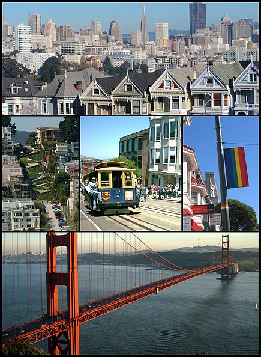

| Город |
|---|
| Сан-Франциско |
| англ. San Francisco |
|  |
Cтрана
 США США |
| Штат Калифорния |
| Округ Сан-Франциско |
| Мэр Лондон Брид |
Сан-Франци́ско (англ. San Francisco [ˌsæn frənˈsɪskoʊ] или [ˌsæn frænˈsɪskoʊ], разг. просторечн. Frisco[3][4]) — город и округ в штате Калифорния, США, названный в честь католического святого (по-испански San) Франциска Ассизского[5]. Население в 2017 году составляло 884 363 человек, это четвёртый по численности населения город Калифорнии и двенадцатый в США[2]. Площадь Сан-Франциско составляет 600,6 км2, из них суши — 121,4 км2, воды — 479,2 км2. Сан-Франциско расположен на северной оконечности полуострова Сан-Франциско. Бо́льшую часть своей истории он являлся самым населённым и важным городом области залива Сан-Франциско. В 1776 году испанцы обосновались на побережье полуострова, построив форт у пролива Золотые Ворота и основав миссию, названную в честь Святого Франциска[6]. Возникший рядом с ней небольшой городок назывался Йерба-Буэна[en] (исп. Yerba Buena). В 1848 году, благодаря калифорнийской золотой лихорадке, город начал бурно расти[7]. В этом же году он был переименован в Сан-Франциско. После разрушительного землетрясения и пожара в 1906 году город был быстро и практически полностью перестроен[8]. Сан-Франциско является мировым туристическим центром[9], известный своими летними холодными туманами, крутыми холмами и сочетанием викторианской и современной архитектуры. В число достопримечательностей города входят мост «Золотые ворота», остров Алькатрас, система канатных трамваев, Башня Койт[en] и Чайна-таун.
Содержание
- История
- Прозвища города
Испанская исследовательская группа под командованием
Гаспара Де Портолы прибыла сюда 2 ноября 1769 года,
это был первый задокументированный визит в Залив Сан-Франциско, вся прибрежная территория была
присоединена к вице-королевству Новая Испания[11].
Семь лет спустя испанцами была основана Миссия Святого Франциска Ассизского[en]
(второе её название — Миссия Долорес)
,
которая находилась под прикрытием небольшого форта, на месте которого сейчас находится парк
Пресидио[en].
Название района Рашен-Хилл (англ. Russian Hill — русский холм)
,
расположенного в центре Сан-Франциско, появилось во времена Золотой лихорадки,
когда поселенцами было обнаружено небольшое захоронение на вершине холма. Несмотря на то, что тела
не были идентифицированы,надписи кириллицей на надгробиях позволили предположить, что это были
могилы русских торговцев и
моряков, проживавших в Форт-Россе[12].
Мост Золоты́е Воро́та (англ. the Golden Gate Bridge) — висячий мост через пролив Золотые Ворота. Он соединяет город Сан-Франциско на севере полуострова Сан-Франциско и южную часть округа Марин, рядом с пригородом Саусалито.
אני אוהב את סן פרנסיסקו
Город Сан-Франциско
- History
- Real Life
- Entertaiment